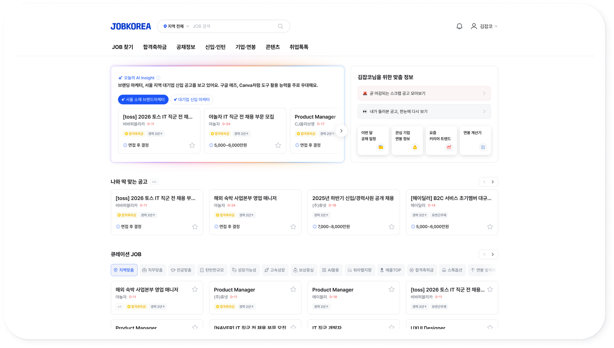
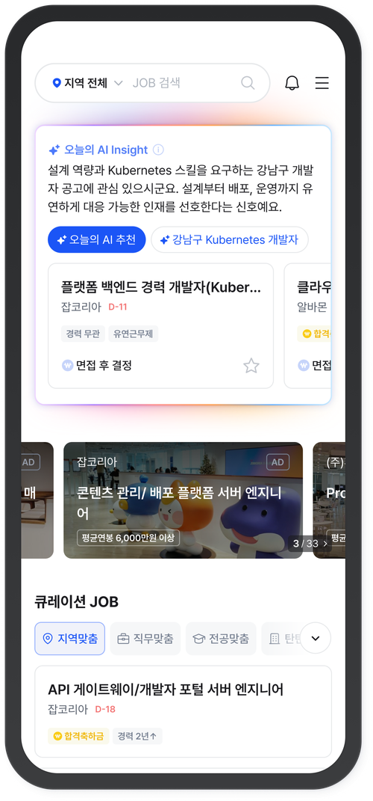
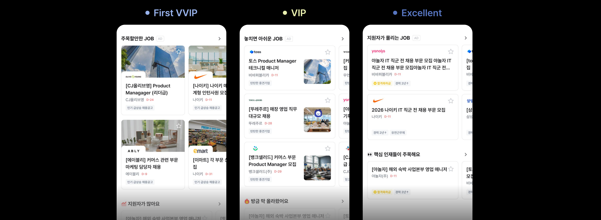
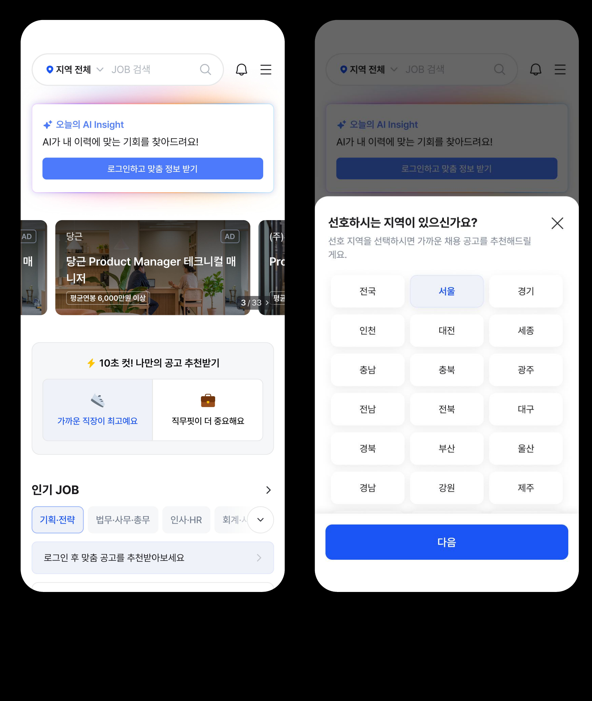
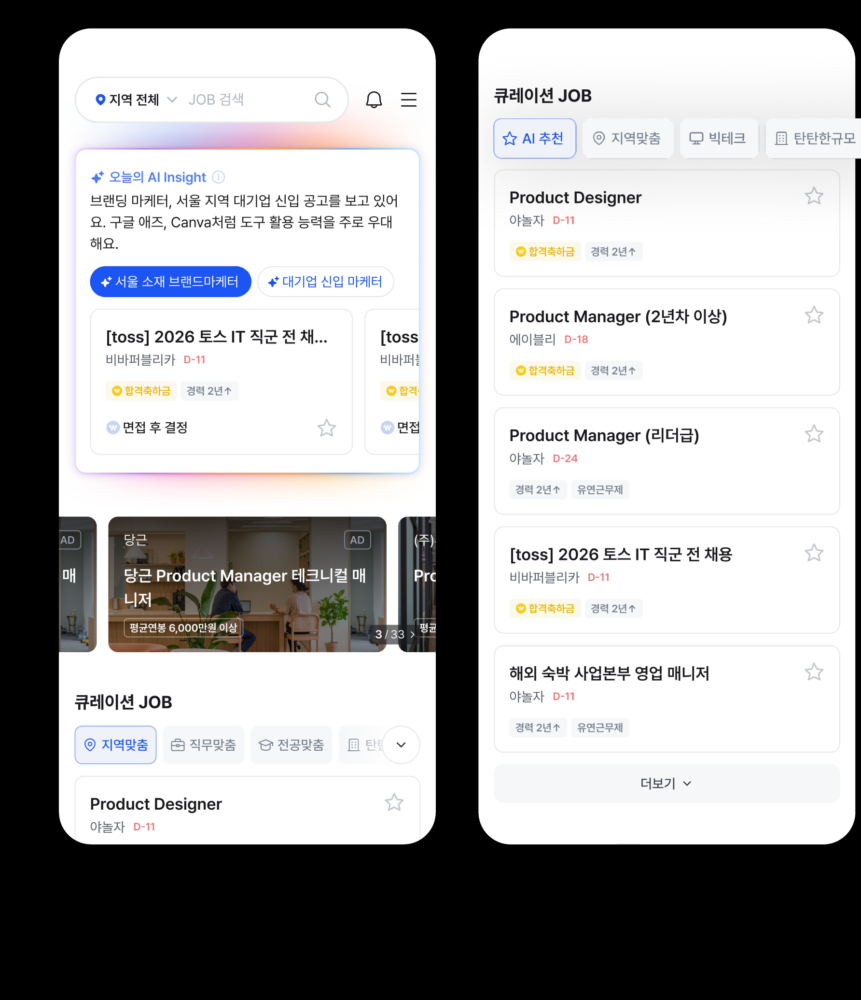
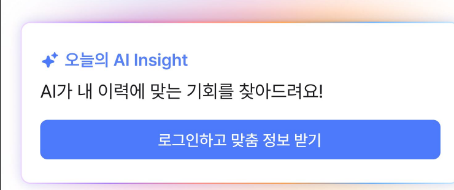

비로그인 방문자 70%의 Cold Start 문제를 온보딩과 AI 추천으로 해결. 잡코리아 메인을 광고판에서 개인화 게이트로 재정의했습니다.


전체 방문자의 74.2%는 비로그인 상태로 유입되지만, 기존 홈은 개인화 데이터가 없는 사용자에게도 동일한 콘텐츠(고정 광고 티어)를 노출해 원하는 정보를 탐색하기 어려운 구조였습니다.
GA, 2025.01.01~08.18 기준
모바일이 PC 대비 2.4배 높음(로그인 여부 무관, 전체 방문자 기준)
비로그인이 로그인 대비 약 10배 높음(기기 구분 없이, 전체 방문자 기준)
개인화가 없는 상태에서는 관심 공고를 발견하기 어려웠다
모바일에서 탐색 부담이 더욱 크게 나타났다
첫 방문 사용자를 위한 탐색 경험이 필요했다
사용자에게 새로운 행동을 요구하기보다, 첫 방문에 확보한 최소한의 정보(직군·경력)를 활용해 기존 공고 카드와 광고 구조 안에서 자연스럽게 매칭이 이루어지도록 메인을 재구성했습니다.
만약:
그러면:
맞춤 공고 연결률이 높아져 CTR·CVR은 오르고, 메인 이탈률은 줄어들 것
우선순위 높음: 개인화의 전제 조건
만약:
그러면:
기존 고정 배너 대비 CVR이 오를 것
A 검증 이후 순차 진행
비로그인 사용자 비중이 74.2%로 대부분 개인화 데이터가 없는 상태였고, 모바일 이탈률(23.6%)은 PC(9.8%)의 2.4배, 체류시간은 모바일 1:18로 PC 2:28보다 크게 짧았습니다. 첫 화면에서 방향이 결정된다는 뜻이었습니다.
| 통합검색: 1위 | 신입 52.8% · 경력 51.4% |
| AI 추천: 2위 | 신입 34.4% · 경력 36.0% |
| 퀵메뉴·상단 배너·기타 | 나머지 약 12~14% |
신입·경력 모두 검색을 최우선으로 쓰고, AI 추천 수요는 이미 2위. 노출 방식이 문제였습니다.
정보 계층 재설계. 사용자 목적에 맞게 섹션 순서 재배치.
로그인 시 더 정확한 추천 가능함을 명시. 자연스러운 전환 유도.
로그인 없이도 직군·경력 수집. 첫 방문부터 개인화 가능.
수집 정보 기반 맞춤 공고 노출. 광고 티어 내 AI 매칭 점수 적용.
To-be 플로우: 첫 방문 · 온보딩 · AI 매칭 · 개인화 메인 · 로그인 유도 · 정밀 추천 순으로 이어집니다

화면별 사용성 테스트 + 대면 인터뷰
Task 1: 가벼운 둘러보기(5분)
Task 2: 마음에 드는 공고 찾기(5분)
잡코리아 20~40대 사용자 총 20명
라이트 유저 11명 · 헤비 유저 9명
2025.11.24~11.28(5일)
18 / 20명: "화면이 더 깔끔하고 한눈에 들어온다", "AI 인사이트가 내 직군·조건에 맞게 잘 추천해준다"
| 질문 | AS-IS | TO-BE |
|---|---|---|
| 해당 화면에 대한 만족도 | 3.1 | 4.3 |
| 광고 공고와 일반 공고를 구분할 수 있었다 | 3.5 | 3.9 |
| 필요한 정보를 빠르고 쉽게 찾을 수 있었다 | 2.6 | 4.3 |
| 공고 탐색 과정이 편안하고 피로감이 적었다 | 2.6 | 4.1 |
| 공고 카드 내 정보량이 적당했다 | 2.8 | 4.1 |
공통: 취업/이직은 "해야 하는 일"이라 효율·시간절약 중시. AI 추천은 좋아하지만 근거·설명이 없으면 신뢰도가 떨어짐.
라이트 유저: 당장 필요한 공고만 빠르게 보고 끝냄. "광고 같으면" 바로 스킵, 스크롤 짧고 상세 화면도 깊게 안 봄.
헤비 유저: 이왕 켰으면 정보를 최대한 뽑아보려는 성향. 여러 섹션을 두루 거치며 상대적으로 오래 머무름.
01 섹션별 타이틀 변경: "놓치면 아쉬운 JOB" 등 추상적 문구 → 지원자 기반·마감 임박·업로드 시점 등 기준이 보이는 문구로
02 AD 라벨 톤 조정: 라벨이 BG·텍스트 대비 과도하게 눈에 띄어 "직무가 맞아도 안 보고 넘겼다"는 반응 → 색상 톤을 낮춤
03 온보딩 배너 타이틀·UI 변경: "밸런스 게임" 표현이 "시간 잡아먹을 게임"처럼 보여 바로 닫아버리는 이탈 발생 → "맞춤 공고 추천받기"로 A/B 테스트, 클릭 의도·호감도 상승 확인
04 AI Insight 추천 근거 노출: "이게 왜 뜬 거지?" 의문 해소를 위해 섹션·카드 단위로 추천 기준 텍스트 추가
05 맞춤 서비스 구성·명칭 변경: '취업TOOL'처럼 기능이 불분명한 이름을 관심도 높은 명칭으로 재정비

온보딩: 직군·경력 수집 · Cold Start 해소

메인: AI 추천 카드 · 광고 티어 내 개인화 레이어

로그인 유도 배너 · 정밀 추천 전환
UT에서 미리 발견한 이슈가 출시 후 VOC로 재확인됐습니다
01 AI 추천 근거 노출: "왜 이 공고인지" 설명 추가
02 섹션명·라벨 정비: UT 혼란 구간 해소
03 PC 레이아웃 A/B 테스트: 정보 밀도 최적화
UT에서 "AI Insight 신뢰도 부족"이 발견돼 다음 과제로 "추천 근거 노출 개선"을 남겼었습니다. 그런데 근거를 어떻게 보여줄지 고도화하기 전에, 더 근본적인 질문을 먼저 검증했습니다: AI 인사이트라는 문구·설명 영역 자체가 없어도 되는 게 아닐까? 메인 페이지 '오늘의 AI 추천' 영역에서 상단 Insight 문구 노출 여부를 A/B로 나눠 순효과(Incrementality)를 측정했습니다.
User-level 랜덤 배정 · 트래픽 50:50
2026.03.04~03.11(1주, 주중/주말 포함)
A안: AI Insight 문구 + 추천 리스트
B안: 추천 리스트만(Insight 미노출)
회원당 공고 클릭 수·지원 수(핵심)
메인 CTR·CVR(보조)
AI Insight 문구 영역을 제거하고 추천 리스트(AgentRec)만 노출하는 것으로 확정했습니다. 다음 과제였던 "추천 근거 노출 개선"은 문구를 다듬는 대신, 애초에 없어도 되는 설명을 걷어내는 것으로 결론이 났습니다. 신뢰도 문제의 해법이 항상 "더 설명하기"는 아니라는 걸 확인한 케이스입니다.